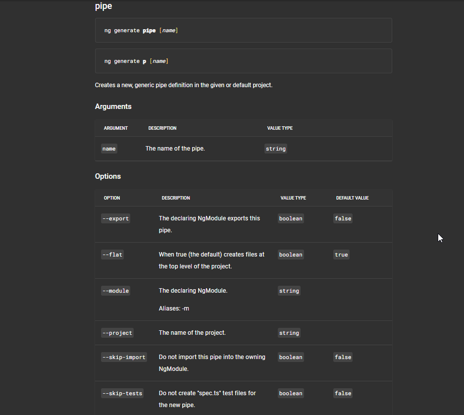
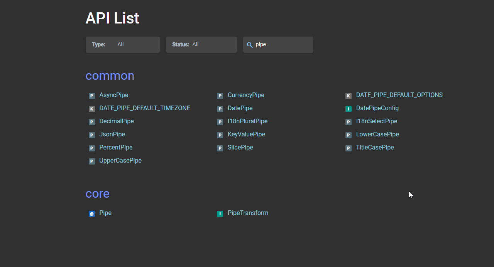

<body>
  <div class="row">
    <div class="col-xs-24">
      <nav class="navbar navbar-expand-lg bg-light">
        <div class="container-fluid">
          <div class="collapse navbar-collapse" id="navbarSupportedContent">
            <ul class="navbar-nav me-auto mb-2 mb-lg-0">
              <li class="nav-item">
                <a class="nav-link" routerLink="/pipes/pipes-basics">
                  <svg xmlns="http://www.w3.org/2000/svg" width="16" height="16" fill="currentColor"
                    class="bi bi-router-fill" viewBox="0 0 16 16">
                    <path
                      d="M5.525 3.025a3.5 3.5 0 0 1 4.95 0 .5.5 0 1 0 .707-.707 4.5 4.5 0 0 0-6.364 0 .5.5 0 0 0 .707.707Z" />
                    <path
                      d="M6.94 4.44a1.5 1.5 0 0 1 2.12 0 .5.5 0 0 0 .708-.708 2.5 2.5 0 0 0-3.536 0 .5.5 0 0 0 .707.707Z" />
                    <path
                      d="M2.974 2.342a.5.5 0 1 0-.948.316L3.806 8H1.5A1.5 1.5 0 0 0 0 9.5v2A1.5 1.5 0 0 0 1.5 13H2a.5.5 0 0 0 .5.5h2A.5.5 0 0 0 5 13h6a.5.5 0 0 0 .5.5h2a.5.5 0 0 0 .5-.5h.5a1.5 1.5 0 0 0 1.5-1.5v-2A1.5 1.5 0 0 0 14.5 8h-2.306l1.78-5.342a.5.5 0 1 0-.948-.316L11.14 8H4.86L2.974 2.342ZM2.5 11a.5.5 0 1 1 0-1 .5.5 0 0 1 0 1Zm4.5-.5a.5.5 0 1 1 1 0 .5.5 0 0 1-1 0Zm2.5.5a.5.5 0 1 1 0-1 .5.5 0 0 1 0 1Zm1.5-.5a.5.5 0 1 1 1 0 .5.5 0 0 1-1 0Zm2 0a.5.5 0 1 1 1 0 .5.5 0 0 1-1 0Z" />
                    <path d="M8.5 5.5a.5.5 0 1 1-1 0 .5.5 0 0 1 1 0Z" />
                  </svg>
                  Basic Pipes
                </a>
              </li>
              <li class="nav-item">
                <a class="nav-link" routerLink="/pipes/pipes-customs">
                  <svg xmlns="http://www.w3.org/2000/svg" width="16" height="16" fill="currentColor" class="bi bi-person-vcard" viewBox="0 0 16 16">
                    <path d="M5 8a2 2 0 1 0 0-4 2 2 0 0 0 0 4Zm4-2.5a.5.5 0 0 1 .5-.5h4a.5.5 0 0 1 0 1h-4a.5.5 0 0 1-.5-.5ZM9 8a.5.5 0 0 1 .5-.5h4a.5.5 0 0 1 0 1h-4A.5.5 0 0 1 9 8Zm1 2.5a.5.5 0 0 1 .5-.5h3a.5.5 0 0 1 0 1h-3a.5.5 0 0 1-.5-.5Z"/>
                    <path d="M2 2a2 2 0 0 0-2 2v8a2 2 0 0 0 2 2h12a2 2 0 0 0 2-2V4a2 2 0 0 0-2-2H2ZM1 4a1 1 0 0 1 1-1h12a1 1 0 0 1 1 1v8a1 1 0 0 1-1 1H8.96c.026-.163.04-.33.04-.5C9 10.567 7.21 9 5 9c-2.086 0-3.8 1.398-3.984 3.181A1.006 1.006 0 0 1 1 12V4Z"/>
                  </svg>
                 Custom Pipes
                </a>
              </li>
              <li class="nav-item">
                <a class="nav-link" routerLink="/pipes/pipes-customs-advanced">
                  <svg xmlns="http://www.w3.org/2000/svg" width="16" height="16" fill="currentColor" class="bi bi-sort-alpha-down" viewBox="0 0 16 16">
                    <path fill-rule="evenodd" d="M10.082 5.629 9.664 7H8.598l1.789-5.332h1.234L13.402 7h-1.12l-.419-1.371h-1.781zm1.57-.785L11 2.687h-.047l-.652 2.157h1.351z"/>
                    <path d="M12.96 14H9.028v-.691l2.579-3.72v-.054H9.098v-.867h3.785v.691l-2.567 3.72v.054h2.645V14zM4.5 2.5a.5.5 0 0 0-1 0v9.793l-1.146-1.147a.5.5 0 0 0-.708.708l2 1.999.007.007a.497.497 0 0 0 .7-.006l2-2a.5.5 0 0 0-.707-.708L4.5 12.293V2.5z"/>
                  </svg>
                 Advanced Pipes With Filter
                </a>
              </li>
              <li class="nav-item">
                <a class="nav-link" routerLink="/pipes/pipes-customs-reverse">
                  <svg xmlns="http://www.w3.org/2000/svg" width="16" height="16" fill="currentColor" class="bi bi-list-columns-reverse" viewBox="0 0 16 16">
                    <path fill-rule="evenodd" d="M0 .5A.5.5 0 0 1 .5 0h2a.5.5 0 0 1 0 1h-2A.5.5 0 0 1 0 .5Zm4 0a.5.5 0 0 1 .5-.5h10a.5.5 0 0 1 0 1h-10A.5.5 0 0 1 4 .5Zm-4 2A.5.5 0 0 1 .5 2h2a.5.5 0 0 1 0 1h-2a.5.5 0 0 1-.5-.5Zm4 0a.5.5 0 0 1 .5-.5h9a.5.5 0 0 1 0 1h-9a.5.5 0 0 1-.5-.5Zm-4 2A.5.5 0 0 1 .5 4h2a.5.5 0 0 1 0 1h-2a.5.5 0 0 1-.5-.5Zm4 0a.5.5 0 0 1 .5-.5h11a.5.5 0 0 1 0 1h-11a.5.5 0 0 1-.5-.5Zm-4 2A.5.5 0 0 1 .5 6h2a.5.5 0 0 1 0 1h-2a.5.5 0 0 1-.5-.5Zm4 0a.5.5 0 0 1 .5-.5h8a.5.5 0 0 1 0 1h-8a.5.5 0 0 1-.5-.5Zm-4 2A.5.5 0 0 1 .5 8h2a.5.5 0 0 1 0 1h-2a.5.5 0 0 1-.5-.5Zm4 0a.5.5 0 0 1 .5-.5h8a.5.5 0 0 1 0 1h-8a.5.5 0 0 1-.5-.5Zm-4 2a.5.5 0 0 1 .5-.5h2a.5.5 0 0 1 0 1h-2a.5.5 0 0 1-.5-.5Zm4 0a.5.5 0 0 1 .5-.5h10a.5.5 0 0 1 0 1h-10a.5.5 0 0 1-.5-.5Zm-4 2a.5.5 0 0 1 .5-.5h2a.5.5 0 0 1 0 1h-2a.5.5 0 0 1-.5-.5Zm4 0a.5.5 0 0 1 .5-.5h6a.5.5 0 0 1 0 1h-6a.5.5 0 0 1-.5-.5Zm-4 2a.5.5 0 0 1 .5-.5h2a.5.5 0 0 1 0 1h-2a.5.5 0 0 1-.5-.5Zm4 0a.5.5 0 0 1 .5-.5h11a.5.5 0 0 1 0 1h-11a.5.5 0 0 1-.5-.5Z"/>
                  </svg>
                 Advanced Pipes Reverse String
                </a>
              </li>
              <li class="nav-item">
                <a class="nav-link" routerLink="/pipes/pipes-customs-sort">
                  <svg xmlns="http://www.w3.org/2000/svg" width="16" height="16" fill="currentColor" class="bi bi-sort-up-alt" viewBox="0 0 16 16">
                    <path d="M3.5 13.5a.5.5 0 0 1-1 0V4.707L1.354 5.854a.5.5 0 1 1-.708-.708l2-1.999.007-.007a.498.498 0 0 1 .7.006l2 2a.5.5 0 1 1-.707.708L3.5 4.707V13.5zm4-9.5a.5.5 0 0 1 0-1h1a.5.5 0 0 1 0 1h-1zm0 3a.5.5 0 0 1 0-1h3a.5.5 0 0 1 0 1h-3zm0 3a.5.5 0 0 1 0-1h5a.5.5 0 0 1 0 1h-5zM7 12.5a.5.5 0 0 0 .5.5h7a.5.5 0 0 0 0-1h-7a.5.5 0 0 0-.5.5z"/>
                  </svg>
                 Advanced Pipes With Sort By
                </a>
              </li>


            </ul>
          </div>
        </div>
      </nav>
    </div>
  </div>
  <main>
    <div class="row">
      <div class="col-xs-12">
        <div class="d-grid gap-2 d-md-flex justify-content-md-end">
          <button type="button" class="btn btn-outline-dark" routerLink="/home">Back Home</button>
        </div>
      </div>
    </div>
    <div class="row">
      <div class="col-xs-12">
        <h2>Pipes</h2>
        <h3>What is Pipes? Pipes is feature in Angular allow you transform output in your template.</h3>
      </div>
    </div>
    <div class="row ">
      <div class="col-xs-12 image">
        <h2><a href="https://angular.io/cli/generate#pipe-command" target="_blank">Create Pipes by Angular CLI or go to Angular.io</a>
        </h2>
      </div>
      <div class="col-xs-12">
        <div class="image">
          
        </div>
      </div>
      <div class="col-xs-12 image">
        <h2><a href="https://angular.io/api?query=pipe" target="_blank">Kind of Pipes in Angular.io</a>
        </h2>
      </div>
      <div class="col-xs-12">
        <div class="image">
          
        </div>
      </div>
    </div>
  </main>
</body>
